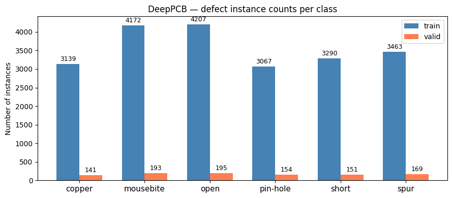
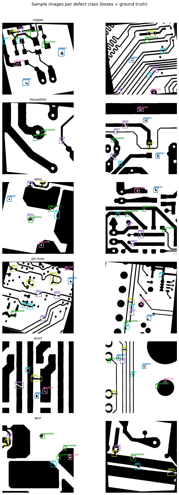
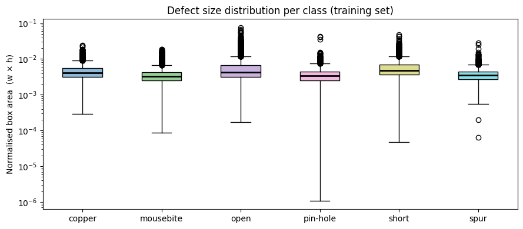
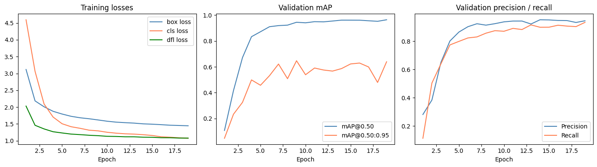
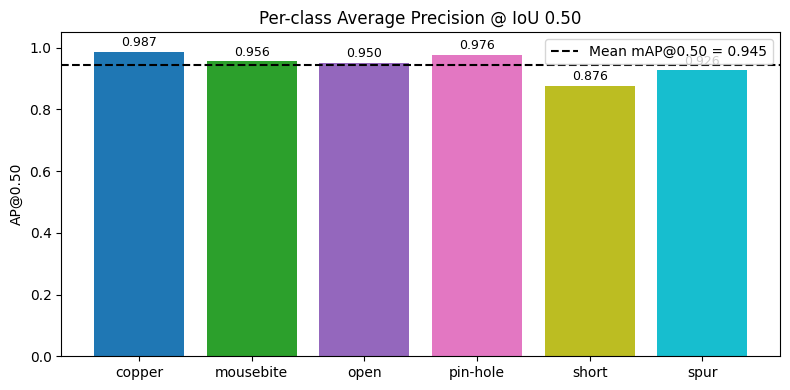
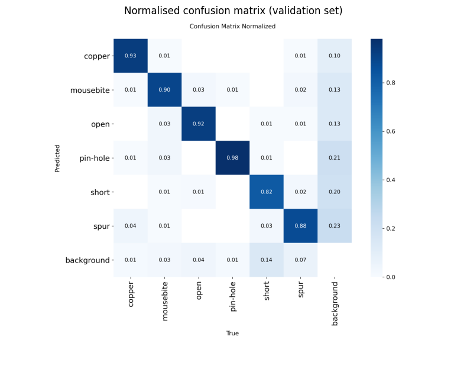
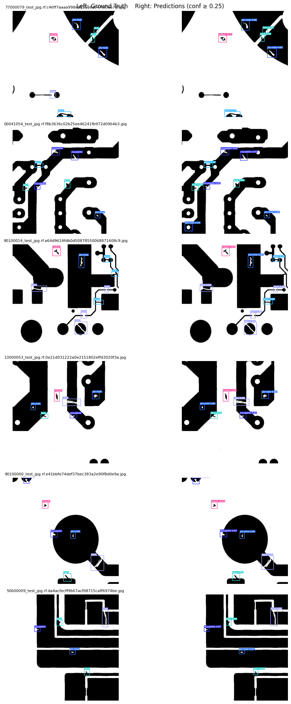
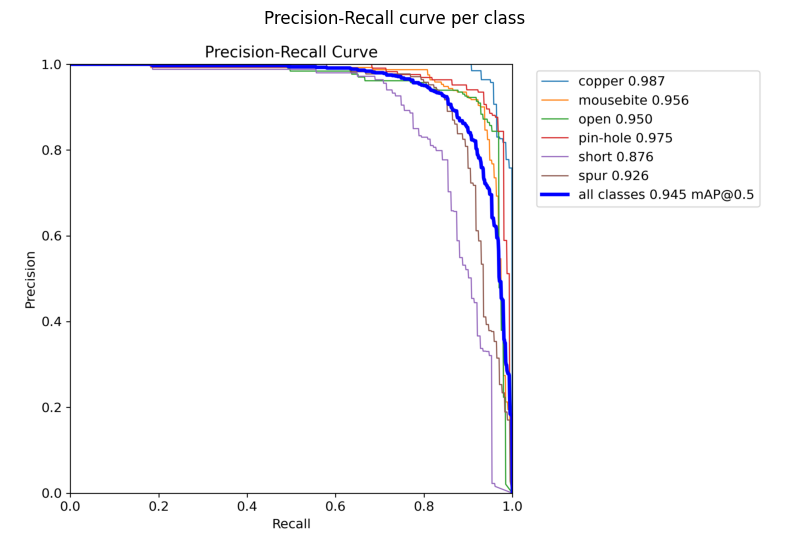
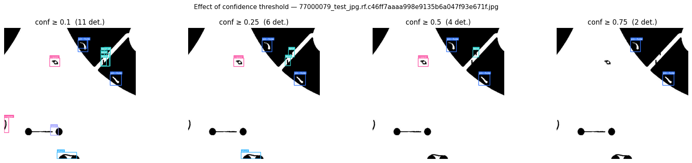
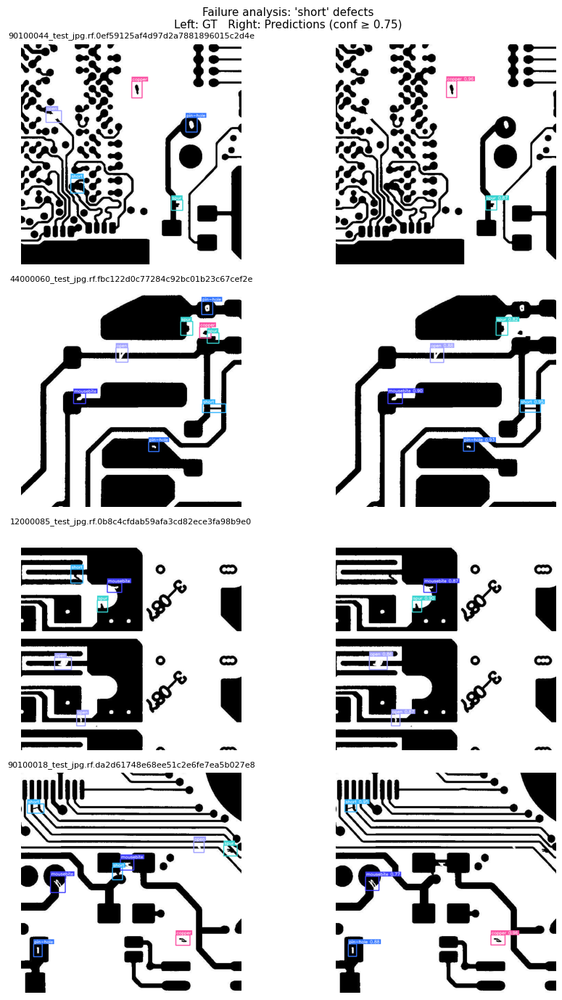

Object Detection with YOLO11 — PCB Defect Detection¶
In this session we train a YOLO11 object detection model to locate and classify defects on printed circuit boards (PCBs). By the end you will have:
Explored the DeepPCB dataset and understood its class structure
Trained a YOLO11n detection model from pretrained weights
Evaluated per-class mAP and understood what the numbers mean
Analysed failure cases and connected them back to the class imbalance story from Day 1
Dataset: DeepPCB — 1,500 PCB images, 6 defect classes
Model: YOLO11n (nano) pretrained on COCO, fine-tuned on DeepPCB
License: Dataset CC BY 4.0
Assumed folder layout after Roboflow download¶
deeppcb-4dhir/ ← set DATASET_ROOT below
train/
images/
labels/
valid/
images/
labels/
test/
images/
labels/
data.yaml
0. Setup¶
import os
import sys
print(sys.executable)
/projappl/project_465002387/DEEP_Inspection_Material_Science/workshopvenv/bin/python
import tempfile
miopen_dir = tempfile.mkdtemp(prefix="miopen-", dir="/tmp")
os.environ["MIOPEN_USER_DB_PATH"] = miopen_dir
os.environ["MIOPEN_CUSTOM_CACHE_DIR"] = miopen_dir
# Install dependencies (skip if already installed)
#%pip install supervision
import random
from pathlib import Path
import cv2
import matplotlib.pyplot as plt
import matplotlib.patches as mpatches
import numpy as np
import supervision as sv
import torch
from ultralytics import YOLO
# ── paths ──────────────────────────────────────────────────────────────────
DATASET_ROOT = Path("/projappl/project_465002387/DEEP_Inspection_Material_Science/YOLO_1001/Yolo_Detection/DeepPCB.v5i.yolov11") # ← adjust if your folder is elsewhere
YAML_PATH = DATASET_ROOT / "data.yaml"
# ── reproducibility ────────────────────────────────────────────────────────
SEED = 42
random.seed(SEED)
np.random.seed(SEED)
# ── device ─────────────────────────────────────────────────────────────────
if torch.cuda.is_available():
DEVICE = "cuda"
elif torch.backends.mps.is_available():
DEVICE = "mps"
else:
DEVICE = "cpu"
print(f"Using device: {DEVICE}")
# ── class names (from data.yaml) ───────────────────────────────────────────
CLASS_NAMES = ['copper', 'mousebite', 'open', 'pin-hole', 'short', 'spur']
NC = len(CLASS_NAMES)
print(f"Classes ({NC}): {CLASS_NAMES}")
Using device: cuda
Classes (6): ['copper', 'mousebite', 'open', 'pin-hole', 'short', 'spur']
USERNAME = os.environ.get("USER", "unknown")
print(USERNAME)
FLASH_DIR = Path(f"/flash/project_465002387/MS_YOLO/{USERNAME}")
FLASH_DIR.mkdir(parents=True, exist_ok=True)
RUN_DIR = FLASH_DIR / "runs/detect/deeppcb_yolo11n"
xieruiwe
1. Exploratory Data Analysis¶
Before training anything, we look at the data. The key questions are:
How many images and annotations do we have per split?
Are the defect classes balanced, or does the model face a class imbalance problem?
What do the defects actually look like — and how do their sizes differ across classes?
Answering these shapes every downstream decision: augmentation strategy, evaluation metric choice, and how to interpret the final mAP table.
1.1 Dataset size¶
def count_split(split: str):
img_dir = DATASET_ROOT / split / "images"
label_dir = DATASET_ROOT / split / "labels"
n_images = len(list(img_dir.glob("*.jpg")) + list(img_dir.glob("*.png")))
n_labels = len(list(label_dir.glob("*.txt")))
return n_images, n_labels
for split in ["train", "valid", "test"]:
imgs, labels = count_split(split)
print(f"{split:6s}: {imgs:4d} images, {labels:4d} label files")
train : 3150 images, 3150 label files
valid : 150 images, 150 label files
test : 300 images, 300 label files
1.2 Class distribution¶
Each YOLO label file contains one row per defect instance: class_id cx cy w h.
We read every training label and count instances per class.
def count_instances(split: str):
"""Return array of shape (NC,) with per-class instance counts."""
counts = np.zeros(NC, dtype=int)
label_dir = DATASET_ROOT / split / "labels"
for f in label_dir.glob("*.txt"):
for line in f.read_text().strip().splitlines():
if line:
cls = int(line.split()[0])
counts[cls] += 1
return counts
train_counts = count_instances("train")
valid_counts = count_instances("valid")
# ── plot ───────────────────────────────────────────────────────────────────
x = np.arange(NC)
width = 0.35
fig, ax = plt.subplots(figsize=(9, 4))
bars_t = ax.bar(x - width/2, train_counts, width, label="train", color="steelblue")
bars_v = ax.bar(x + width/2, valid_counts, width, label="valid", color="coral")
ax.set_xticks(x)
ax.set_xticklabels(CLASS_NAMES, fontsize=11)
ax.set_ylabel("Number of instances")
ax.set_title("DeepPCB — defect instance counts per class")
ax.legend()
ax.bar_label(bars_t, padding=2, fontsize=9)
ax.bar_label(bars_v, padding=2, fontsize=9)
plt.tight_layout()
plt.show()
print("\nClass imbalance ratio (max / min instances in train):")
print(f" {train_counts.max() / train_counts.min():.1f}×")

Class imbalance ratio (max / min instances in train):
1.4×
Discussion: Compare this distribution with the Severstal dataset from Day 1. DeepPCB is much more balanced across classes — a deliberate choice by the dataset creators who augmented rare defect types artificially. Does that mean the detection problem is easier?
1.3 What do the defects look like?¶
This is the most important EDA step: we need to see the actual defects before designing or evaluating any model.
def load_labels(label_path: Path, img_w: int, img_h: int):
"""Parse a YOLO label file → list of (class_id, x1, y1, x2, y2) in pixels."""
boxes = []
for line in label_path.read_text().strip().splitlines():
if not line:
continue
parts = line.split()
cls, cx, cy, w, h = int(parts[0]), *map(float, parts[1:5])
x1 = int((cx - w/2) * img_w)
y1 = int((cy - h/2) * img_h)
x2 = int((cx + w/2) * img_w)
y2 = int((cy + h/2) * img_h)
boxes.append((cls, x1, y1, x2, y2))
return boxes
COLORS = plt.cm.tab10(np.linspace(0, 1, NC))
def show_sample_per_class(n_samples: int = 2):
"""Display n_samples images for each defect class."""
img_dir = DATASET_ROOT / "train" / "images"
label_dir = DATASET_ROOT / "train" / "labels"
# Build index: class_id → list of image stems that contain it
class_to_stems = {c: [] for c in range(NC)}
for lf in label_dir.glob("*.txt"):
classes_in_file = set()
for line in lf.read_text().strip().splitlines():
if line:
classes_in_file.add(int(line.split()[0]))
for c in classes_in_file:
class_to_stems[c].append(lf.stem)
fig, axes = plt.subplots(NC, n_samples, figsize=(5 * n_samples, 3.5 * NC))
fig.suptitle("Sample images per defect class (boxes = ground truth)",
fontsize=13, y=1.01)
for cls_id, cls_name in enumerate(CLASS_NAMES):
stems = random.sample(class_to_stems[cls_id],
min(n_samples, len(class_to_stems[cls_id])))
for col, stem in enumerate(stems):
ax = axes[cls_id][col]
# find image file (jpg or png)
img_path = next(
(img_dir / f"{stem}{ext}" for ext in [".jpg", ".png"]
if (img_dir / f"{stem}{ext}").exists()), None)
if img_path is None:
ax.axis("off"); continue
img = cv2.cvtColor(cv2.imread(str(img_path)), cv2.COLOR_BGR2RGB)
h, w = img.shape[:2]
boxes = load_labels(label_dir / f"{stem}.txt", w, h)
ax.imshow(img)
for (c, x1, y1, x2, y2) in boxes:
color = COLORS[c]
rect = mpatches.FancyBboxPatch(
(x1, y1), x2-x1, y2-y1,
boxstyle="square,pad=0",
linewidth=1.5, edgecolor=color, facecolor="none")
ax.add_patch(rect)
ax.text(x1, y1 - 3, CLASS_NAMES[c],
color=color, fontsize=7, fontweight="bold")
ax.set_title(f"{cls_name}" if col == 0 else "", fontsize=10)
ax.axis("off")
plt.tight_layout()
plt.show()
show_sample_per_class(n_samples=2)

1.4 Defect size distribution¶
Defect size (bounding box area as a fraction of image area) varies significantly across classes. Smaller defects are harder to detect — this will show up in per-class mAP later.
# Collect normalised box areas (w * h, already in [0,1]) per class
areas_per_class = {c: [] for c in range(NC)}
label_dir = DATASET_ROOT / "train" / "labels"
for lf in label_dir.glob("*.txt"):
for line in lf.read_text().strip().splitlines():
if not line: continue
parts = line.split()
cls, w, h = int(parts[0]), float(parts[3]), float(parts[4])
areas_per_class[cls].append(w * h)
fig, ax = plt.subplots(figsize=(9, 4))
data = [areas_per_class[c] for c in range(NC)]
bp = ax.boxplot(data, labels=CLASS_NAMES, patch_artist=True,
medianprops=dict(color="black", linewidth=2))
for patch, color in zip(bp["boxes"], COLORS):
patch.set_facecolor((*color[:3], 0.5))
ax.set_ylabel("Normalised box area (w × h)")
ax.set_title("Defect size distribution per class (training set)")
ax.set_yscale("log")
plt.tight_layout()
plt.show()
print("Median normalised area per class:")
for c, name in enumerate(CLASS_NAMES):
med = np.median(areas_per_class[c]) if areas_per_class[c] else 0
print(f" {name:12s}: {med:.5f}")
/tmp/ipykernel_60970/3827458826.py:14: MatplotlibDeprecationWarning: The 'labels' parameter of boxplot() has been renamed 'tick_labels' since Matplotlib 3.9; support for the old name will be dropped in 3.11.
bp = ax.boxplot(data, labels=CLASS_NAMES, patch_artist=True,

Median normalised area per class:
copper : 0.00410
mousebite : 0.00322
open : 0.00432
pin-hole : 0.00342
short : 0.00482
spur : 0.00351
Discussion: Which classes have the smallest defects? Predict which classes will have the lowest mAP before training. We will revisit this after evaluation.
Also notice: even with balanced instance counts (Section 1.2), the detection difficulty is not equal across classes. This is why mAP per class is more informative than overall accuracy.
1.5 YOLO label format — one worked example¶
Before training, let’s read one label file raw so the format is concrete.
sample_label = next((DATASET_ROOT / "train" / "labels").glob("*.txt"))
print(f"Label file: {sample_label.name}")
print("─" * 50)
print(sample_label.read_text())
print("─" * 50)
print("Format: <class_id> <cx> <cy> <w> <h>")
print("All coordinates are normalised to [0, 1] relative to image dimensions.")
Label file: 00041025_test_jpg.rf.057335d01873060ed59362ce11e9b693.txt
──────────────────────────────────────────────────
2 0.4637068700586778 0.274061676815055 0.09160210424747908 0.10570796382236297
4 0.6876652605286822 0.23676102869261173 0.08662577898771542 0.07391418703849752
1 0.9202963292862216 0.3175748161481008 0.06957920274782323 0.06444696424873823
5 0.6904357818275272 0.16330539289157192 0.06791807317971692 0.06433080675381547
1 0.9288878675179938 0.21308042728019358 0.06940509052429114 0.06112470511252561
0 0.56207462896795 0.6193963119965503 0.0713273884276952 0.0662242513117673
3 0.7363462277852499 0.3129869820522044 0.06748279262088745 0.056025158913283905
2 0.17341039592130034 0.024538851232765918 0.06442876526452758 0.02933092832866013
──────────────────────────────────────────────────
Format: <class_id> <cx> <cy> <w> <h>
All coordinates are normalised to [0, 1] relative to image dimensions.
2. Training¶
We fine-tune YOLO11n (nano — smallest and fastest variant) starting from COCO pretrained weights.
Starting pretrained rather than from scratch gives much better results in 30 epochs on a small dataset like DeepPCB.
Training is launched in the cell below. While it runs, refer to the slides for:
What the FPN backbone does (multi-scale feature extraction)
What
box_loss,cls_loss, anddfl_lossmean in the log outputHow the anchor-free detection head differs from anchor-based YOLO versions
# Verify data.yaml is found and has correct structure before launching
import yaml
with open(YAML_PATH) as f:
cfg = yaml.safe_load(f)
print("data.yaml contents:")
for k, v in cfg.items():
print(f" {k}: {v}")
assert cfg.get("nc") == NC, f"Expected nc={NC}, got {cfg.get('nc')}"
print("\n✓ data.yaml looks correct")
data.yaml contents:
path: /projappl/project_465002387/DEEP_Inspection_Material_Science/YOLO_1001/Yolo_Detection/DeepPCB.v5i.yolov11
train: train/images
val: valid/images
test: test/images
nc: 6
names: ['copper', 'mousebite', 'open', 'pin-hole', 'short', 'spur']
roboflow: {'workspace': 'tack-hwa-wong-zak5u', 'project': 'deeppcb-4dhir', 'version': 5, 'license': 'CC BY 4.0', 'url': 'https://universe.roboflow.com/tack-hwa-wong-zak5u/deeppcb-4dhir/dataset/5'}
✓ data.yaml looks correct
YOLO_WEIGHTS = Path("/projappl/project_465002387/DEEP_Inspection_Material_Science/YOLO_1001/Yolo_Detection/yolo11n.pt")
model = YOLO(str(YOLO_WEIGHTS))
results = model.train(
data = str(YAML_PATH),
epochs = 30,
imgsz = 640,
batch = 16,
device = DEVICE,
workers = 2,
patience= 10, # early stopping if val mAP doesn't improve for 10 epochs
seed = SEED,
project = str(FLASH_DIR / "runs/detect"),
name = "deeppcb_yolo11n",
exist_ok= True,
verbose = True,
)
#RUN_DIR = Path(results.save_dir)
print(f"\nTraining complete. Outputs saved to: {RUN_DIR}")
New https://pypi.org/project/ultralytics/8.4.164 available 😃 Update with 'pip install -U ultralytics'
Ultralytics 8.4.7 🚀 Python-3.12.3 torch-2.9.1+rocm6.4 CUDA:0 (AMD Instinct MI250X, 65520MiB)
engine/trainer: agnostic_nms=False, amp=True, angle=1.0, augment=False, auto_augment=randaugment, batch=16, bgr=0.0, box=7.5, cache=False, cfg=None, classes=None, close_mosaic=10, cls=0.5, compile=False, conf=None, copy_paste=0.0, copy_paste_mode=flip, cos_lr=False, cutmix=0.0, data=/projappl/project_465002387/DEEP_Inspection_Material_Science/YOLO_1001/Yolo_Detection/DeepPCB.v5i.yolov11/data.yaml, degrees=0.0, deterministic=True, device=0, dfl=1.5, dnn=False, dropout=0.0, dynamic=False, embed=None, epochs=30, erasing=0.4, exist_ok=True, fliplr=0.5, flipud=0.0, format=torchscript, fraction=1.0, freeze=None, half=False, hsv_h=0.015, hsv_s=0.7, hsv_v=0.4, imgsz=640, int8=False, iou=0.7, keras=False, kobj=1.0, line_width=None, lr0=0.01, lrf=0.01, mask_ratio=4, max_det=300, mixup=0.0, mode=train, model=/projappl/project_465002387/DEEP_Inspection_Material_Science/YOLO_1001/Yolo_Detection/yolo11n.pt, momentum=0.937, mosaic=1.0, multi_scale=0.0, name=deeppcb_yolo11n, nbs=64, nms=False, opset=None, optimize=False, optimizer=auto, overlap_mask=True, patience=10, perspective=0.0, plots=True, pose=12.0, pretrained=True, profile=False, project=/flash/project_465002387/MS_YOLO/xieruiwe/runs/detect, rect=False, resume=False, retina_masks=False, rle=1.0, save=True, save_conf=False, save_crop=False, save_dir=/pfs/lustref1/flash/project_465002387/MS_YOLO/xieruiwe/runs/detect/deeppcb_yolo11n, save_frames=False, save_json=False, save_period=-1, save_txt=False, scale=0.5, seed=42, shear=0.0, show=False, show_boxes=True, show_conf=True, show_labels=True, simplify=True, single_cls=False, source=None, split=val, stream_buffer=False, task=detect, time=None, tracker=botsort.yaml, translate=0.1, val=True, verbose=True, vid_stride=1, visualize=False, warmup_bias_lr=0.1, warmup_epochs=3.0, warmup_momentum=0.8, weight_decay=0.0005, workers=2, workspace=None
Overriding model.yaml nc=80 with nc=6
from n params module arguments
0 -1 1 464 ultralytics.nn.modules.conv.Conv [3, 16, 3, 2]
1 -1 1 4672 ultralytics.nn.modules.conv.Conv [16, 32, 3, 2]
2 -1 1 6640 ultralytics.nn.modules.block.C3k2 [32, 64, 1, False, 0.25]
3 -1 1 36992 ultralytics.nn.modules.conv.Conv [64, 64, 3, 2]
4 -1 1 26080 ultralytics.nn.modules.block.C3k2 [64, 128, 1, False, 0.25]
5 -1 1 147712 ultralytics.nn.modules.conv.Conv [128, 128, 3, 2]
6 -1 1 87040 ultralytics.nn.modules.block.C3k2 [128, 128, 1, True]
7 -1 1 295424 ultralytics.nn.modules.conv.Conv [128, 256, 3, 2]
8 -1 1 346112 ultralytics.nn.modules.block.C3k2 [256, 256, 1, True]
9 -1 1 164608 ultralytics.nn.modules.block.SPPF [256, 256, 5]
10 -1 1 249728 ultralytics.nn.modules.block.C2PSA [256, 256, 1]
11 -1 1 0 torch.nn.modules.upsampling.Upsample [None, 2, 'nearest']
12 [-1, 6] 1 0 ultralytics.nn.modules.conv.Concat [1]
13 -1 1 111296 ultralytics.nn.modules.block.C3k2 [384, 128, 1, False]
14 -1 1 0 torch.nn.modules.upsampling.Upsample [None, 2, 'nearest']
15 [-1, 4] 1 0 ultralytics.nn.modules.conv.Concat [1]
16 -1 1 32096 ultralytics.nn.modules.block.C3k2 [256, 64, 1, False]
17 -1 1 36992 ultralytics.nn.modules.conv.Conv [64, 64, 3, 2]
18 [-1, 13] 1 0 ultralytics.nn.modules.conv.Concat [1]
19 -1 1 86720 ultralytics.nn.modules.block.C3k2 [192, 128, 1, False]
20 -1 1 147712 ultralytics.nn.modules.conv.Conv [128, 128, 3, 2]
21 [-1, 10] 1 0 ultralytics.nn.modules.conv.Concat [1]
22 -1 1 378880 ultralytics.nn.modules.block.C3k2 [384, 256, 1, True]
23 [16, 19, 22] 1 431842 ultralytics.nn.modules.head.Detect [6, 16, None, [64, 128, 256]]
YOLO11n summary: 182 layers, 2,591,010 parameters, 2,590,994 gradients, 6.4 GFLOPs
Transferred 448/499 items from pretrained weights
Freezing layer 'model.23.dfl.conv.weight'
AMP: running Automatic Mixed Precision (AMP) checks...
Downloading https://github.com/ultralytics/assets/releases/download/v8.4.0/yolo26n.pt to 'yolo26n.pt': 100% ━━━━━━━━━━━━ 5.3MB 41.7MB/s 0.1s.1s<0.0s
AMP: checks passed ✅
train: Fast image access ✅ (ping: 2.3±2.5 ms, read: 1.3±0.9 MB/s, size: 29.5 KB)
train: Scanning /pfs/lustrep4/projappl/project_465002387/DEEP_Inspection_Material_Science/YOLO_1001/Yolo_Detection/DeepPCB.v5i.yolov11/train/labels.cache... 3150 images, 0 backgrounds, 0 corrupt: 100% ━━━━━━━━━━━━ 3150/3150 777.2Mit/s 0.0s
val: Fast image access ✅ (ping: 43.1±95.1 ms, read: 2.6±1.8 MB/s, size: 28.5 KB)
val: Scanning /pfs/lustrep4/projappl/project_465002387/DEEP_Inspection_Material_Science/YOLO_1001/Yolo_Detection/DeepPCB.v5i.yolov11/valid/labels.cache... 150 images, 0 backgrounds, 0 corrupt: 100% ━━━━━━━━━━━━ 150/150 8.0Mit/s 0.0s
Plotting labels to /pfs/lustref1/flash/project_465002387/MS_YOLO/xieruiwe/runs/detect/deeppcb_yolo11n/labels.jpg...
optimizer: 'optimizer=auto' found, ignoring 'lr0=0.01' and 'momentum=0.937' and determining best 'optimizer', 'lr0' and 'momentum' automatically...
optimizer: MuSGD(lr=0.001, momentum=0.9) with parameter groups 81 weight(decay=0.0), 88 weight(decay=0.0005), 87 bias(decay=0.0)
Image sizes 640 train, 640 val
Using 2 dataloader workers
Logging results to /pfs/lustref1/flash/project_465002387/MS_YOLO/xieruiwe/runs/detect/deeppcb_yolo11n
Starting training for 30 epochs...
Epoch GPU_mem box_loss cls_loss dfl_loss Instances Size
1/30 0.418G 3.118 4.595 2.03 133 640: 100% ━━━━━━━━━━━━ 197/197 1.6it/s 1:590.3ss
Class Images Instances Box(P R mAP50 mAP50-95): 100% ━━━━━━━━━━━━ 5/5 1.2s/it 5.9s0.2s7s
all 150 1003 0.282 0.114 0.107 0.0469
Epoch GPU_mem box_loss cls_loss dfl_loss Instances Size
2/30 2.46G 2.184 3.063 1.459 105 640: 100% ━━━━━━━━━━━━ 197/197 5.4it/s 36.7s0.2ss
Class Images Instances Box(P R mAP50 mAP50-95): 100% ━━━━━━━━━━━━ 5/5 7.7it/s 0.7s0.2s
all 150 1003 0.384 0.504 0.416 0.233
Epoch GPU_mem box_loss cls_loss dfl_loss Instances Size
3/30 2.68G 2.01 2.093 1.351 149 640: 100% ━━━━━━━━━━━━ 197/197 5.8it/s 34.2s0.2ss
Class Images Instances Box(P R mAP50 mAP50-95): 100% ━━━━━━━━━━━━ 5/5 7.6it/s 0.7s0.2s
all 150 1003 0.651 0.64 0.672 0.325
Epoch GPU_mem box_loss cls_loss dfl_loss Instances Size
4/30 2.68G 1.875 1.705 1.268 127 640: 100% ━━━━━━━━━━━━ 197/197 5.9it/s 33.4s0.1ss
Class Images Instances Box(P R mAP50 mAP50-95): 100% ━━━━━━━━━━━━ 5/5 8.0it/s 0.6s0.2s
all 150 1003 0.802 0.774 0.833 0.499
Epoch GPU_mem box_loss cls_loss dfl_loss Instances Size
5/30 2.68G 1.794 1.506 1.231 126 640: 100% ━━━━━━━━━━━━ 197/197 5.9it/s 33.4s0.2ss
Class Images Instances Box(P R mAP50 mAP50-95): 100% ━━━━━━━━━━━━ 5/5 8.2it/s 0.6s0.2s
all 150 1003 0.866 0.799 0.872 0.457
Epoch GPU_mem box_loss cls_loss dfl_loss Instances Size
6/30 2.68G 1.726 1.417 1.198 150 640: 100% ━━━━━━━━━━━━ 197/197 5.9it/s 33.2s0.2ss
Class Images Instances Box(P R mAP50 mAP50-95): 100% ━━━━━━━━━━━━ 5/5 8.6it/s 0.6s0.2s
all 150 1003 0.903 0.824 0.911 0.532
Epoch GPU_mem box_loss cls_loss dfl_loss Instances Size
7/30 2.68G 1.683 1.369 1.181 131 640: 100% ━━━━━━━━━━━━ 197/197 5.9it/s 33.3s0.2ss
Class Images Instances Box(P R mAP50 mAP50-95): 100% ━━━━━━━━━━━━ 5/5 8.5it/s 0.6s0.2s
all 150 1003 0.924 0.831 0.919 0.622
Epoch GPU_mem box_loss cls_loss dfl_loss Instances Size
8/30 2.69G 1.653 1.314 1.163 188 640: 100% ━━━━━━━━━━━━ 197/197 5.9it/s 33.2s0.1ss
Class Images Instances Box(P R mAP50 mAP50-95): 100% ━━━━━━━━━━━━ 5/5 8.7it/s 0.6s0.2s
all 150 1003 0.914 0.857 0.923 0.508
Epoch GPU_mem box_loss cls_loss dfl_loss Instances Size
9/30 2.69G 1.618 1.293 1.15 127 640: 100% ━━━━━━━━━━━━ 197/197 5.9it/s 33.4s0.2ss
Class Images Instances Box(P R mAP50 mAP50-95): 100% ━━━━━━━━━━━━ 5/5 8.7it/s 0.6s0.2s
all 150 1003 0.925 0.875 0.945 0.647
Epoch GPU_mem box_loss cls_loss dfl_loss Instances Size
10/30 2.69G 1.58 1.252 1.132 109 640: 100% ━━━━━━━━━━━━ 197/197 5.9it/s 33.4s0.2ss
Class Images Instances Box(P R mAP50 mAP50-95): 100% ━━━━━━━━━━━━ 5/5 9.1it/s 0.5s0.2s
all 150 1003 0.938 0.871 0.941 0.539
Epoch GPU_mem box_loss cls_loss dfl_loss Instances Size
11/30 2.7G 1.553 1.225 1.127 97 640: 100% ━━━━━━━━━━━━ 197/197 6.0it/s 33.0s0.2ss
Class Images Instances Box(P R mAP50 mAP50-95): 100% ━━━━━━━━━━━━ 5/5 9.5it/s 0.5s0.1s
all 150 1003 0.943 0.891 0.95 0.591
Epoch GPU_mem box_loss cls_loss dfl_loss Instances Size
12/30 2.7G 1.537 1.206 1.117 139 640: 100% ━━━━━━━━━━━━ 197/197 5.9it/s 33.2s0.1ss
Class Images Instances Box(P R mAP50 mAP50-95): 100% ━━━━━━━━━━━━ 5/5 10.0it/s 0.5s.1s
all 150 1003 0.943 0.883 0.948 0.576
Epoch GPU_mem box_loss cls_loss dfl_loss Instances Size
13/30 2.7G 1.524 1.197 1.117 121 640: 100% ━━━━━━━━━━━━ 197/197 5.9it/s 33.2s0.2ss
Class Images Instances Box(P R mAP50 mAP50-95): 100% ━━━━━━━━━━━━ 5/5 10.4it/s 0.5s.1s
all 150 1003 0.922 0.916 0.955 0.567
Epoch GPU_mem box_loss cls_loss dfl_loss Instances Size
14/30 2.7G 1.502 1.18 1.105 115 640: 100% ━━━━━━━━━━━━ 197/197 6.0it/s 33.1s0.2ss
Class Images Instances Box(P R mAP50 mAP50-95): 100% ━━━━━━━━━━━━ 5/5 10.7it/s 0.5s.2s
all 150 1003 0.952 0.899 0.962 0.587
Epoch GPU_mem box_loss cls_loss dfl_loss Instances Size
15/30 2.7G 1.492 1.157 1.102 117 640: 100% ━━━━━━━━━━━━ 197/197 6.0it/s 32.9s0.2ss
Class Images Instances Box(P R mAP50 mAP50-95): 100% ━━━━━━━━━━━━ 5/5 10.9it/s 0.5s.2s
all 150 1003 0.951 0.9 0.962 0.622
Epoch GPU_mem box_loss cls_loss dfl_loss Instances Size
16/30 2.7G 1.478 1.117 1.09 130 640: 100% ━━━━━━━━━━━━ 197/197 6.0it/s 33.0s0.1ss
Class Images Instances Box(P R mAP50 mAP50-95): 100% ━━━━━━━━━━━━ 5/5 10.9it/s 0.5s.2s
all 150 1003 0.947 0.914 0.961 0.629
Epoch GPU_mem box_loss cls_loss dfl_loss Instances Size
17/30 2.7G 1.461 1.104 1.089 157 640: 100% ━━━━━━━━━━━━ 197/197 5.9it/s 33.2s0.2ss
Class Images Instances Box(P R mAP50 mAP50-95): 100% ━━━━━━━━━━━━ 5/5 11.1it/s 0.5s.2s
all 150 1003 0.947 0.908 0.957 0.599
Epoch GPU_mem box_loss cls_loss dfl_loss Instances Size
18/30 2.7G 1.453 1.088 1.079 160 640: 100% ━━━━━━━━━━━━ 197/197 6.0it/s 33.1s0.2ss
Class Images Instances Box(P R mAP50 mAP50-95): 100% ━━━━━━━━━━━━ 5/5 11.0it/s 0.5s.2s
all 150 1003 0.933 0.904 0.953 0.479
Epoch GPU_mem box_loss cls_loss dfl_loss Instances Size
19/30 2.7G 1.445 1.074 1.078 94 640: 100% ━━━━━━━━━━━━ 197/197 5.9it/s 33.4s0.2ss
Class Images Instances Box(P R mAP50 mAP50-95): 100% ━━━━━━━━━━━━ 5/5 10.8it/s 0.5s.2s
all 150 1003 0.945 0.934 0.965 0.639
EarlyStopping: Training stopped early as no improvement observed in last 10 epochs. Best results observed at epoch 9, best model saved as best.pt.
To update EarlyStopping(patience=10) pass a new patience value, i.e. `patience=300` or use `patience=0` to disable EarlyStopping.
19 epochs completed in 0.206 hours.
Optimizer stripped from /pfs/lustref1/flash/project_465002387/MS_YOLO/xieruiwe/runs/detect/deeppcb_yolo11n/weights/last.pt, 5.5MB
Optimizer stripped from /pfs/lustref1/flash/project_465002387/MS_YOLO/xieruiwe/runs/detect/deeppcb_yolo11n/weights/best.pt, 5.5MB
Validating /pfs/lustref1/flash/project_465002387/MS_YOLO/xieruiwe/runs/detect/deeppcb_yolo11n/weights/best.pt...
Ultralytics 8.4.7 🚀 Python-3.12.3 torch-2.9.1+rocm6.4 CUDA:0 (AMD Instinct MI250X, 65520MiB)
YOLO11n summary (fused): 101 layers, 2,583,322 parameters, 0 gradients, 6.3 GFLOPs
Class Images Instances Box(P R mAP50 mAP50-95): 100% ━━━━━━━━━━━━ 5/5 3.4it/s 1.5s0.3s
all 150 1003 0.925 0.875 0.945 0.647
copper 118 141 0.982 0.929 0.987 0.825
mousebite 123 193 0.938 0.869 0.956 0.641
open 136 195 0.93 0.892 0.95 0.607
pin-hole 138 154 0.866 0.968 0.975 0.734
short 114 151 0.899 0.755 0.876 0.471
spur 120 169 0.934 0.839 0.926 0.602
Speed: 0.1ms preprocess, 2.2ms inference, 0.0ms loss, 1.8ms postprocess per image
Results saved to /pfs/lustref1/flash/project_465002387/MS_YOLO/xieruiwe/runs/detect/deeppcb_yolo11n
Training complete. Outputs saved to: /flash/project_465002387/MS_YOLO/xieruiwe/runs/detect/deeppcb_yolo11n
2.1 Training curves¶
import pandas as pd
metrics_csv = RUN_DIR / "results.csv"
df = pd.read_csv(metrics_csv)
df.columns = df.columns.str.strip() # Ultralytics sometimes pads column names
fig, axes = plt.subplots(1, 3, figsize=(14, 4))
# losses
for col, label, color in [
("train/box_loss", "box loss", "steelblue"),
("train/cls_loss", "cls loss", "coral"),
("train/dfl_loss", "dfl loss", "green"),
]:
if col in df.columns:
axes[0].plot(df["epoch"], df[col], label=label, color=color)
axes[0].set_title("Training losses")
axes[0].set_xlabel("Epoch")
axes[0].legend()
# mAP
for col, label, color in [
("metrics/mAP50(B)", "mAP@0.50", "steelblue"),
("metrics/mAP50-95(B)", "mAP@0.50:0.95", "coral"),
]:
if col in df.columns:
axes[1].plot(df["epoch"], df[col], label=label, color=color)
axes[1].set_title("Validation mAP")
axes[1].set_xlabel("Epoch")
axes[1].legend()
# precision / recall
for col, label, color in [
("metrics/precision(B)", "Precision", "steelblue"),
("metrics/recall(B)", "Recall", "coral"),
]:
if col in df.columns:
axes[2].plot(df["epoch"], df[col], label=label, color=color)
axes[2].set_title("Validation precision / recall")
axes[2].set_xlabel("Epoch")
axes[2].legend()
plt.tight_layout()
plt.show()

3. Evaluation¶
We load the best checkpoint and run the full validation suite.
3.1 Per-class mAP¶
import yaml
from pathlib import Path
# Print the resolved paths Ultralytics will actually look for
with open(YAML_PATH) as f:
cfg = yaml.safe_load(f)
print("data.yaml contents:")
print(yaml.dump(cfg))
base = Path(cfg.get("path", ""))
for split in ["train", "val", "test"]:
raw = cfg.get(split, "")
resolved = (base / raw) if not Path(raw).is_absolute() else Path(raw)
exists = resolved.exists()
print(f"{split}: '{raw}' → {resolved} → exists={exists}")
data.yaml contents:
names:
- copper
- mousebite
- open
- pin-hole
- short
- spur
nc: 6
path: /projappl/project_465002387/DEEP_Inspection_Material_Science/YOLO_1001/Yolo_Detection/DeepPCB.v5i.yolov11
roboflow:
license: CC BY 4.0
project: deeppcb-4dhir
url: https://universe.roboflow.com/tack-hwa-wong-zak5u/deeppcb-4dhir/dataset/5
version: 5
workspace: tack-hwa-wong-zak5u
test: test/images
train: train/images
val: valid/images
train: 'train/images' → /projappl/project_465002387/DEEP_Inspection_Material_Science/YOLO_1001/Yolo_Detection/DeepPCB.v5i.yolov11/train/images → exists=True
val: 'valid/images' → /projappl/project_465002387/DEEP_Inspection_Material_Science/YOLO_1001/Yolo_Detection/DeepPCB.v5i.yolov11/valid/images → exists=True
test: 'test/images' → /projappl/project_465002387/DEEP_Inspection_Material_Science/YOLO_1001/Yolo_Detection/DeepPCB.v5i.yolov11/test/images → exists=True
best_weights = RUN_DIR / "weights" / "best.pt"
model_eval = YOLO(str(best_weights))
val_results = model_eval.val(
data = str(YAML_PATH),
split = "val",
device = DEVICE,
verbose= False,
)
# Per-class AP@50
ap50_per_class = val_results.box.ap50 # shape: (NC,)
map50_overall = val_results.box.map50
map5095_overall= val_results.box.map
print(f"Overall mAP@0.50 : {map50_overall:.4f}")
print(f"Overall mAP@0.50:0.95 : {map5095_overall:.4f}")
print()
print(f"{'Class':<14} {'AP@0.50':>10}")
print("─" * 26)
for name, ap in zip(CLASS_NAMES, ap50_per_class):
print(f"{name:<14} {ap:>10.4f}")
Ultralytics 8.4.7 🚀 Python-3.12.3 torch-2.9.1+rocm6.4 CUDA:0 (AMD Instinct MI250X, 65520MiB)
YOLO11n summary (fused): 101 layers, 2,583,322 parameters, 0 gradients, 6.3 GFLOPs
val: Fast image access ✅ (ping: 0.0±0.0 ms, read: 522.8±381.8 MB/s, size: 37.7 KB)
val: Scanning /pfs/lustrep4/projappl/project_465002387/DEEP_Inspection_Material_Science/YOLO_1001/Yolo_Detection/DeepPCB.v5i.yolov11/valid/labels.cache... 150 images, 0 backgrounds, 0 corrupt: 100% ━━━━━━━━━━━━ 150/150 62.9Mit/s 0.0s
Class Images Instances Box(P R mAP50 mAP50-95): 100% ━━━━━━━━━━━━ 10/10 1.9it/s 5.2s.3s
all 150 1003 0.925 0.875 0.945 0.647
Speed: 1.1ms preprocess, 25.7ms inference, 0.0ms loss, 2.8ms postprocess per image
Results saved to /pfs/lustrep4/users/xieruiwe/YOLO_1001_test/runs/detect/val
Overall mAP@0.50 : 0.9452
Overall mAP@0.50:0.95 : 0.6475
Class AP@0.50
──────────────────────────
copper 0.9869
mousebite 0.9556
open 0.9502
pin-hole 0.9757
short 0.8763
spur 0.9264
# Visualise per-class AP@50
fig, ax = plt.subplots(figsize=(8, 4))
bars = ax.bar(CLASS_NAMES, ap50_per_class,
color=[COLORS[i] for i in range(NC)])
ax.axhline(map50_overall, color="black", linestyle="--",
label=f"Mean mAP@0.50 = {map50_overall:.3f}")
ax.set_ylim(0, 1.05)
ax.set_ylabel("AP@0.50")
ax.set_title("Per-class Average Precision @ IoU 0.50")
ax.legend()
ax.bar_label(bars, fmt="%.3f", padding=2, fontsize=9)
plt.tight_layout()
plt.show()

Discussion: Compare this with your predictions from Section 1.4.
Which classes underperform? Does that match their median defect size?
What is the gap between mAP@0.50 and mAP@0.50:0.95? Why does it exist?
3.2 Confusion matrix¶
Ultralytics saves a confusion matrix image during training. Let’s load it.
cm_path = RUN_DIR / "confusion_matrix_normalized.png"
if cm_path.exists():
img = cv2.cvtColor(cv2.imread(str(cm_path)), cv2.COLOR_BGR2RGB)
plt.figure(figsize=(8, 7))
plt.imshow(img)
plt.axis("off")
plt.title("Normalised confusion matrix (validation set)")
plt.tight_layout()
plt.show()
else:
print(f"Confusion matrix not found at {cm_path}")
print("Check the run directory:", RUN_DIR)

3.3 Qualitative results — predictions vs ground truth¶
Numbers alone don’t tell the full story. We visualise model predictions alongside ground truth on a sample of validation images.
CONF_THRESHOLD = 0.25 # ← try adjusting this in the next section
val_img_dir = DATASET_ROOT / "valid" / "images"
val_label_dir = DATASET_ROOT / "valid" / "labels"
val_images = sorted(val_img_dir.glob("*.jpg")) + sorted(val_img_dir.glob("*.png"))
samples = random.sample(val_images, min(6, len(val_images)))
# supervision annotators
box_ann = sv.BoxAnnotator(thickness=2)
label_ann = sv.LabelAnnotator(text_scale=0.4, text_padding=2)
fig, axes = plt.subplots(len(samples), 2,
figsize=(12, 3.5 * len(samples)))
fig.suptitle(f"Left: Ground Truth Right: Predictions (conf ≥ {CONF_THRESHOLD})",
fontsize=12)
for row, img_path in enumerate(samples):
img_bgr = cv2.imread(str(img_path))
img_rgb = cv2.cvtColor(img_bgr, cv2.COLOR_BGR2RGB)
h, w = img_rgb.shape[:2]
# ── ground truth ────────────────────────────────────────────────────
lf = val_label_dir / (img_path.stem + ".txt")
boxes = load_labels(lf, w, h) if lf.exists() else []
gt_img = img_rgb.copy()
if boxes:
xyxy = np.array([[x1,y1,x2,y2] for _,x1,y1,x2,y2 in boxes])
cls_ids = np.array([c for c,*_ in boxes])
det_gt = sv.Detections(xyxy=xyxy, class_id=cls_ids)
lbls_gt = [CLASS_NAMES[c] for c in cls_ids]
gt_img = box_ann.annotate(gt_img.copy(), det_gt)
gt_img = label_ann.annotate(gt_img, det_gt, lbls_gt)
# ── predictions ─────────────────────────────────────────────────────
pred = model_eval.predict(str(img_path), conf=CONF_THRESHOLD,
device=DEVICE, verbose=False)[0]
pred_img = img_rgb.copy()
if len(pred.boxes):
det_pred = sv.Detections.from_ultralytics(pred)
lbls_pred = [
f"{CLASS_NAMES[c]} {s:.2f}"
for c, s in zip(det_pred.class_id, det_pred.confidence)
]
pred_img = box_ann.annotate(pred_img.copy(), det_pred)
pred_img = label_ann.annotate(pred_img, det_pred, lbls_pred)
axes[row][0].imshow(gt_img); axes[row][0].axis("off")
axes[row][1].imshow(pred_img); axes[row][1].axis("off")
axes[row][0].set_title(img_path.name, fontsize=8)
plt.tight_layout()
plt.show()

3.4 Confidence threshold exploration¶
The confidence threshold is a key operating point decision. Lowering it catches more true defects (higher recall) but also more false positives (lower precision). The right threshold depends on the cost of each error type in the application.
# Plot precision-recall curve from the saved Ultralytics output
pr_path = RUN_DIR / "BoxPR_curve.png"
if pr_path.exists():
img = cv2.cvtColor(cv2.imread(str(pr_path)), cv2.COLOR_BGR2RGB)
plt.figure(figsize=(8, 6))
plt.imshow(img)
plt.axis("off")
plt.title("Precision-Recall curve per class")
plt.tight_layout()
plt.show()
else:
print(f"PR curve not found at {pr_path}")

# Manually sweep confidence thresholds and report detection counts on one image
# Pick an image with multiple defect types
sweep_img = samples[0]
thresholds = [0.10, 0.25, 0.50, 0.75]
fig, axes = plt.subplots(1, len(thresholds),
figsize=(4.5 * len(thresholds), 4))
fig.suptitle(f"Effect of confidence threshold — {sweep_img.name}", fontsize=11)
for ax, thr in zip(axes, thresholds):
pred = model_eval.predict(str(sweep_img), conf=thr,
device=DEVICE, verbose=False)[0]
img_rgb = cv2.cvtColor(cv2.imread(str(sweep_img)), cv2.COLOR_BGR2RGB)
if len(pred.boxes):
det = sv.Detections.from_ultralytics(pred)
lbls = [f"{CLASS_NAMES[c]}" for c in det.class_id]
img_rgb = box_ann.annotate(img_rgb.copy(), det)
img_rgb = label_ann.annotate(img_rgb, det, lbls)
n = len(pred.boxes)
ax.imshow(img_rgb)
ax.set_title(f"conf ≥ {thr} ({n} det.)")
ax.axis("off")
plt.tight_layout()
plt.show()

Discussion: In a PCB quality control line, which error is more costly — a missed defect (false negative) or a false alarm (false positive)? How would that affect your threshold choice?
4. Failure Analysis¶
The worst-performing class is where the most is to be learned. We deliberately seek out false negatives — defects the model missed.
# Identify the weakest class
worst_cls_id = int(np.argmin(ap50_per_class))
worst_cls_name = CLASS_NAMES[worst_cls_id]
print(f"Weakest class: '{worst_cls_name}' (AP@0.50 = {ap50_per_class[worst_cls_id]:.4f})")
# Find val images that contain this class in ground truth
val_label_dir = DATASET_ROOT / "valid" / "labels"
worst_stems = []
for lf in val_label_dir.glob("*.txt"):
for line in lf.read_text().strip().splitlines():
if line and int(line.split()[0]) == worst_cls_id:
worst_stems.append(lf.stem)
break
print(f"Found {len(worst_stems)} val images containing '{worst_cls_name}'")
Weakest class: 'short' (AP@0.50 = 0.8763)
Found 114 val images containing 'short'
# Show a few images for the weakest class: GT vs prediction
FAIL_CONF = 0.75
val_img_dir = DATASET_ROOT / "valid" / "images"
show_stems = random.sample(worst_stems, min(4, len(worst_stems)))
fig, axes = plt.subplots(len(show_stems), 2,
figsize=(10, 3.5 * len(show_stems)))
fig.suptitle(f"Failure analysis: '{worst_cls_name}' defects\n"
f"Left: GT Right: Predictions (conf ≥ {FAIL_CONF})",
fontsize=11)
for row, stem in enumerate(show_stems):
img_path = next(
(val_img_dir / f"{stem}{ext}" for ext in [".jpg", ".png"]
if (val_img_dir / f"{stem}{ext}").exists()), None)
if img_path is None:
continue
img_bgr = cv2.imread(str(img_path))
img_rgb = cv2.cvtColor(img_bgr, cv2.COLOR_BGR2RGB)
h, w = img_rgb.shape[:2]
# GT
lf = val_label_dir / f"{stem}.txt"
boxes = load_labels(lf, w, h) if lf.exists() else []
gt_img = img_rgb.copy()
if boxes:
xyxy = np.array([[x1,y1,x2,y2] for _,x1,y1,x2,y2 in boxes])
cls_ids = np.array([c for c,*_ in boxes])
det_gt = sv.Detections(xyxy=xyxy, class_id=cls_ids)
gt_img = box_ann.annotate(gt_img, det_gt)
gt_img = label_ann.annotate(gt_img, det_gt,
[CLASS_NAMES[c] for c in cls_ids])
# Prediction
pred = model_eval.predict(str(img_path), conf=FAIL_CONF,
device=DEVICE, verbose=False)[0]
pred_img = img_rgb.copy()
if len(pred.boxes):
det_pred = sv.Detections.from_ultralytics(pred)
pred_img = box_ann.annotate(pred_img, det_pred)
pred_img = label_ann.annotate(pred_img, det_pred,
[f"{CLASS_NAMES[c]} {s:.2f}"
for c, s in zip(det_pred.class_id, det_pred.confidence)])
axes[row][0].imshow(gt_img); axes[row][0].axis("off")
axes[row][1].imshow(pred_img); axes[row][1].axis("off")
axes[row][0].set_title(stem, fontsize=8)
plt.tight_layout()
plt.show()

Discussion:
Are the missed defects consistently small? Clustered near image edges? Visually similar to background?
What would you do to improve performance on this class? (More data? Higher resolution? Augmentation?)
5. Wrap-up and Bridge to segmentation¶
We have trained a YOLO11n model that can locate and classify six types of PCB defects. The key outputs are:
Overall mAP@0.50 |
see Section 3.1 |
Weakest class |
see Section 4 |
Confidence threshold choice |
depends on FP vs FN cost |
What bounding boxes cannot tell us¶
Detection gives us where a defect is (a rectangle) and what type it is.
It does not tell us:
The exact shape of the defect — is it a hairline crack or a wide pit?
The area of the defect — critical for severity scoring
Whether two adjacent defects are one instance or two
For these questions, we need instance segmentation — which is exactly what the later session covers, using the Magnetic Tile Defect dataset.
# Quick summary table
print("=" * 40)
print(" Morning session results summary")
print("=" * 40)
print(f" Model : YOLO11n (pretrained COCO)")
print(f" Dataset : DeepPCB ({NC} classes)")
print(f" mAP@0.50 : {map50_overall:.4f}")
print(f" mAP@0.50:0.95: {map5095_overall:.4f}")
print()
print(" Per-class AP@0.50:")
for name, ap in zip(CLASS_NAMES, ap50_per_class):
bar = "█" * int(ap * 20)
print(f" {name:<12} {ap:.3f} {bar}")
print("=" * 40)
========================================
Morning session results summary
========================================
Model : YOLO11n (pretrained COCO)
Dataset : DeepPCB (6 classes)
mAP@0.50 : 0.9452
mAP@0.50:0.95: 0.6475
Per-class AP@0.50:
copper 0.987 ███████████████████
mousebite 0.956 ███████████████████
open 0.950 ███████████████████
pin-hole 0.976 ███████████████████
short 0.876 █████████████████
spur 0.926 ██████████████████
========================================